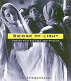

<body bgcolor="#FFFFFF" text="#000000" link="#0000FF" vlink="#CC0000" alink="#CC0000"><center><hr width="350" size="1" align="center" noshade>Critically acclaimed history of Jewish Film reissued in paper edition<hr width="350" size="1" align="center" noshade><p><a href="https://cdcshoppingcart.uchicago.edu/Cart/ChicagoBook.aspx?ISBN=9781566394048&&PRESS=temple" target="_top">Buy this book!</a> | <a href="https://cdcshoppingcart.uchicago.edu/Cart/Cart.aspx?PRESS=temple" target="_top">View Cart</a> | <a href="https://cdcshoppingcart.uchicago.edu/Cart/Cart.aspx?PRESS=temple" target="_top">Check Out</a></p><p></p></center><!--none//--><h1>Bridge of Light</h1>
<H2>Yiddish Film between Two Worlds</H2>
<h3>J. Hoberman</h3>
<P>paper 1-56639-404-X $34.95, Sep 95, <FONT COLOR=#990033>Out of Print</FONT>
<BR> 416 pp
8x9.25
180&nbsp;halftones
</P><BLOCKQUOTE><I>"Prodigiously researched and critically astute, this is a readable work of scholarship that takes a well-earned place as the most authoritative word on a very curious corner of film history."</I>
<br>&#151<b><I>Los Angeles Times Book Review</I></b><I></I></BLOCKQUOTE>
<p>This fascinating cultural and social history places Yiddish-language cinema in the contexts of twentieth-century Jewish history, the history of motion pictures&#151particularly in the United States, Poland, and the Soviet Union&#151and the development of Yiddish secular culture. From the legendary moviehouses and figures to the classic and forgotten films, <I>Bridge of Light</I> is a testament to Yiddish cinema's glory days and an homage to it in its decline.
<BR>&nbsp;<h2>Excerpt</h2><P>Excerpt available at <a href="http://www.temple.edu/tempress">www.temple.edu/tempress</a></p>
<BR>&nbsp;<h2>Reviews</h2>
<p><i>"[A] much-needed spur to revival and reappraisal. If the story of Yiddish cinema is basically, as J. Hoberman puts it, 'the passage from shtetl to city, from Old Country to New World,' he conveys this movement with a vividness of detail that matches the vitality of his subject. Through Yiddish films, he traces the passages inherent in Jewish experience&#151from profound loss to resilience, and from nostalgia to pungent irony."</i>
<br>&#151<b><i>New York Times Book Review</i></b>
<p><I>"An important addition to works on Jewish film and film-making, and an invaluable resource..."</I>
<br>&#151<b><I>Sight and Sound</I></b>
<p><I>"[A]s both a labor of love and a work of scholarship, </I>Bridge of Light<I> is highly impressive."</I>
<br>&#151<b><I>Tikkun</I></b>
<p><I>"... J. Hoberman's beautifully mounted and superbly researched survey of the entire range of Yiddish film-making...[is] a tribute, indeed a monument, to a world lost forever in the ashes of history."</I>
<br>&#151<b><I>Film Quarterly</I></b>
<BR>&nbsp;<h2>Contents</h2><P>
<p>Acknowledgments
<br>Author's Note
<br>Introduction: <I>A Brivele der Mamen</I>
<br>1. Wandering Stars
<br>2. Romance in the Ghetto
<br>3. "The Face of the Earth Will Change"
<br>4. Nineteen-Nineteen
<br>5. Out of Galicia
<br>6. Miracles on the Vistula
<br>7. Yiddish Modernism and <I>Jewish Luck</I>
<br>8. The Prince of Second Avenue
<br>9. Making It in America
<br>10. Once Upon a Time in the Ukraine
<br>11. The Polish Forest
<br>12. The Theatre of the Future
<br>13. Jews of Steel
<br>14. The <I>Faryidisht</I> Film
<br>15. Between <I>Rusland</I> and <I>Daytshland</I>
<br>16. <I>Shund</I>
<br>17. "We're on Our Way"
<br>18. The Greening of Yiddish Film
<br>19. The Cantor's Sons
<br>20. On the Edge of the Abyss
<br>21. Without a Home
<br>22. Phantom Europe
<br>23. Married to America
<br>24. The Living Remnant
<br>Epilogue: A Post Yiddish Cinema
<br>Appendix A: Joseph Burstyn's Documentaries
<br>Appendix B: Partial Yiddish Talkies
<br>Appendix C: Recycled Yiddish Films
<br>Glossary
<br>Notes on Sources
<br>Selected Bibliography
<br>Photograph Credits
<br>Index
</P><BR>&nbsp;<H2>About the Author(s)</H2>
<table><tr><td valign="top"><img src="/tempress/authors/1266_au.gif" height="90" width="75"></td><td width="100%" valign="middle"><p><b>J. Hoberman</b>, film critic at <I>The Village Voice</i> since 1978, is the author of <I><a href="840_reg.html" target="_top">Vulgar Modernism</a></I> (Temple), which was nominated for the 1991 National Book Critics Circle Award, and co-author (with Jonathan Rosenbaum) of <I>Midnight Movies</I>. He has written for numerous national publications, including <I>Artforum</I>, <I>The New York Times</I>, <I>The Nation</I>, <I>The New Republic</I>, and <I>Premiere</I>.</P></td></tr></table>
<BR><H2>Subject Categories</H2>
<p><A HREF="/tempress/general.html" TARGET="_top">General Interest</a>
<BR><A HREF="/tempress/cinema.html" TARGET="_top">Cinema Studies</a>
<BR><A HREF="/tempress/race.html" TARGET="_top">Race and Ethnicity</a>
</p>
<p align="center"><a href="https://cdcshoppingcart.uchicago.edu/Cart/ChicagoBook.aspx?ISBN=9781566394048&&PRESS=temple" target="_top">Buy this book!</a> | <a href="https://cdcshoppingcart.uchicago.edu/Cart/Cart.aspx?PRESS=temple" target="_top">View Cart</a> | <a href="https://cdcshoppingcart.uchicago.edu/Cart/Cart.aspx?PRESS=temple" target="_top">Check Out</a></p><p><font face="Arial" size="1"><a href="copyright.html" onMouseOver="window.status='Web Copyright Policy';return true;" onMouseOut="window.status=''" title="Web Copyright Policy">&copy;</a> 2015 <a href="http://www.temple.edu" target="new" onMouseOver="window.status='Link to Temple University home page';return true;" onMouseOut="window.status=''" title="Link to Temple University home page">Temple University</a>. All Rights Reserved. http://www.temple.edu/tempress/titles/1266_reg.html</font></p>